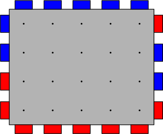
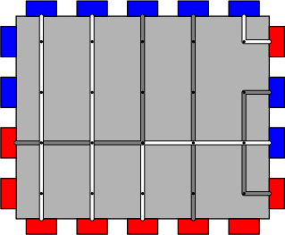
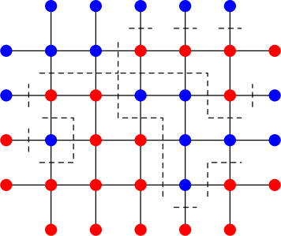
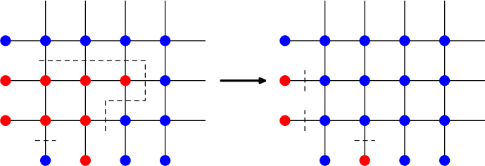
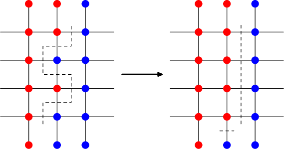

有一个 $n \times m$ 的网络，每行每列的交叉处有一个节点，每行的两个边界处、每列的两个边界处各有一个端口，这些端口共有两种颜色：红色和蓝色。下图即为一个 $5 \times 4$ 的网络的例子：
现在你需要在这些网络中连接线缆，需要满足如下规则：
定义网络的容量为：在满足上述条件下，该网络上最多能连接的线缆条数。如，上图的例子中，网络的容量为 $7$，其中一种构造如下：
但是这个网络不是固定的，每隔一段时间，一些端口的方式会发生变化。具体地，一共发生了 $q$ 次修改，每一次的修改格式如下：
注意这个修改是永久的，即第二次修改是在 "第一次修改的结果" 的基础上进行的。
你需要在第一次修改前以及每一次修改后，计算当前网络的容量。
第一行包含三个非负整数 $n, m, q$ ($1 \leq n, m \leq 10^5; 0 \leq q \leq 10^5$)，分别表示网络的行数和列数，以及修改的个数。
接下来四行，每行一个由 $\texttt R$ 和 $\texttt B$ 构成的字符串分别描述左、右、上、下四个边界的端口分布。字符串的长度分别为 $n, n, m, m$；描述方向分别为从上至下、从上至下、从左至右、从左至右；$\texttt R$ 表示对应端口为红色，$\texttt B$ 表示对应端口为蓝色。
最后 $q$ 行，每行描述依次修改，包含一个字符 $s$ ($s \in \left\{ \texttt L, \texttt R, \texttt U, \texttt D \right\}$ 和两个正整数 $l, r$ ($1 \leq l \leq r$)，表示对应边界上的第 $l \sim r$ 个端口的颜色进行了取反，端口的描述方向同上。当 $s \in \left\{ \texttt L, \texttt R \right\}$ 时保证 $r \leq n$，当 $s \in \left\{ \texttt U, \texttt D \right\}$ 时保证 $r \leq m$)。
输出 $q + 1$ 行，每行一个整数，第 $i$ 行的整数表示第 $i - 1$ 次修改后网络的容量。
先考虑如何求固定网络的容量。
注意到每条 "线段" 只能经过至多一次，因此可以想到网络流建模。
首先，可以规定每条线缆的方向是从红色 "流" 到蓝色，因此可以建立超级源点 $S$ 向所有红色端口连一条容量为 $+ \infty$ 的边 (ps: 这里可以连 $+ \infty$ 是因为每个端口出发要经过一条它专属的边)，建立超级汇点 $T$ 使每个蓝色端口连一条容量为 $+ \infty$ 的边给它。
然后端口与其相邻的节点，相邻的节点之间各连一条容量为 $1$ 的双向边，最后该网络的最大流即为这个网络的 "容量"。
但你的网络流显然不能跑 $100$ 亿个点，因此要进一步分析性质。
由最大流最小割定理，我们将这个问题用最小割的语言重新描述。
首先，$S$ 和所有红色端口连通，$T$ 和所有蓝色端口连通，因此我们的主要目的就是将红色端口和蓝色端口隔开。
而端口向源汇连的边的边权为 $+ \infty$，因此不能被割去，因此我们只能割端口与其相邻的节点间的边 (下简称端口边) 以及
我们需要选择若干端口边和截边将其去掉后，使得任意一个红色端口与蓝色端口都不连通，如下图所示：
为了方便起见，我们可以像上图一样给每个连通块规定一个颜色，表示它和哪种颜色的端口是连通的。如果与任何一个端口都不连通，则颜色任选。
那么，取出所有端点颜色不同的边 (包括端口边和截边)，它们构成原割的一个子集，但也是一个合法割。
因此，下面我们将以 "所有节点的颜色" 的方式来刻画一个割，而且以下默认在对偶图中讨论 (即上图中虚线边构成的集合)。
当然，直接求这个割并不方便，我们需要进一步分析最小割所具有的性质。
(性质 1) 在对偶图中，每个顶点的度均为偶数。
这个性质其实非常显然：只需注意到从对偶图的一个点出发，绕一圈，一定是若干个 "红→蓝→红" 的组合。
(性质 2) 对偶图中不存在圈。
反之，将这个圈去掉后 (即圈内所有节点颜色取反) 仍为割，且这个割是原割的真子集。
(性质 3) (存在某种最小割，满足) 对偶图中不存在从左侧端口到下方端口的路径，其它三种路径亦然。
按照下图策略调整可知，新割的大小不超过原割的大小，且截边的数量严格减少。
由性质 3 可知，对偶图中只存在连接上下端口的路径和左右端口的路径，两者显然不能同时出现 —— 否则又可以得到从左侧端口到下方端口的路径，可以进行调整。因此只存在其中一种，下不妨假设只存在连接上下端口的路径。
(性质 4) (存在某种最小割，满足) 所有截边都是竖直或所有截边都是水平的。
按照下图策略调整可知，可以使得截边只包含 "从顶割到底" 的边。
结合上述结论知，存在最小割为以下两种情况之一：
于是对于这个固定的网络，它的容量就非常好求了：如对于前一种情况，用 $r_i$ ($b_i$) 表示前 $i$ 列，第 $i$ 列节点为红 (蓝) 色所需的最小割边个数 (割边列数${} \times n + {}$端口边数)，DP 求解即可。后一种情况类似处理。时间复杂度 $O \left( n + m \right)$。
现在考虑带修改的情况。尝试使用数据结构，比如线段树，来动态维护 DP。
以前一种情况 (每一列节点颜色相同)，那么对于线段树上的节点 $\left[ L, R \right]$，就考虑第 $L \sim R$ 列上的子问题，分别记录两端颜色分别为红/蓝时的最小割。
合并时有点像矩阵乘法，枚举两端的情况，并决定中间是否贡献一个 $n$。
那怎么处理区间取反呢？首先，如果两侧同时取反，DP 值是不变的；但是对于一侧取反的情形，这些 DP 值是我们未曾计算的。
不过，只需注意到取反是对合变换 (即作两次取反就是恒等)，因此我们可以预处理：预先计算每个区间 $\left[ L, R \right]$ 翻转一侧后的四个最小割，这样如果只取反一侧，就只需将两组 "四个最小割" 交换一下即可。
因此带修改的版本可以在 $O \left( \left( n + m \right) + q \left( \log n + \log m \right) \right)$ 时间内解决。
#include <bits/stdc++.h>
using std::cin;
using std::cout;
typedef std::array <int, 4> array;
const int N = 100054, INF = 0x3f3f3f3f;
struct ST {
#define segc int M = (L + R - 1) >> 1, lc = id << 1, rc = lc | 1
#define exist_pd if (x[id].rev) push_down(x[id], x[lc], x[rc], L, M, R)
int W;
struct node {
array v, rv; int c, d, rev;
inline static node single(int a, int b) {
node ret;
ret.v = {a + b, INF, INF, !a + !b},
ret.rv = {a + !b, INF, INF, !a + b},
ret.c = a, ret.d = b, ret.rev = 0;
return ret;
}
} x[262200];
inline void update(node &ret, const node &l, const node &r) {
#define U(x, y, z) std::min({l.x[y] + r.x[z], l.x[y] + r.x[2 + z] + W, l.x[1 + y] + r.x[z] + W, l.x[1 + y] + r.x[2 + z]})
ret.v = {U(v, 0, 0), U(v, 0, 1), U(v, 2, 0), U(v, 2, 1)},
ret.rv = {U(rv, 0, 0), U(rv, 0, 1), U(rv, 2, 0), U(rv, 2, 1)},
ret.c = l.c + r.c, ret.d = l.d + r.d;
}
inline void push_down(node &ret, node &l, node &r, int L, int M, int R) {flip(l, L, M, ret.rev), flip(r, M + 1, R, ret.rev), ret.rev = 0;}
void flip(node &ret, int L, int R, int v) {
int w = R - L + 1; ret.rev ^= v;
if (v & 1) ret.c = w - ret.c;
if (v & 2) ret.d = w - ret.d;
switch (v) {
case 2: ret.v.swap(ret.rv); break;
case 1: ret.v.swap(ret.rv);
case 3: std::reverse(ret.v.begin(), ret.v.end()), std::reverse(ret.rv.begin(), ret.rv.end()); break;
}
}
void build(int id, int L, int R, char *s1, char *s2) {
if (L == R) {x[id] = node::single(s1[L] >> 4 & 1, s2[L] >> 4 & 1); return;}
segc; build(lc, L, M, s1, s2), build(rc, M + 1, R, s1, s2);
update(x[id], x[lc], x[rc]);
}
void adj(int id, int L, int R, int ql, int qr, int v) {
if (ql <= L && R <= qr) return flip(x[id], L, R, v);
segc; exist_pd;
if (ql <= M) adj(lc, L, M, ql, qr, v);
if (qr > M) adj(rc, M + 1, R, ql, qr, v);
update(x[id], x[lc], x[rc]);
}
} H, V;
int R, C, q;
char le[N], ri[N], tp[N], bo[N];
int accumulate() {
const ST::node &h = H.x[1], &v = V.x[1];
return std::min({
h.v[0] + v.c + v.d,
h.v[1] + v.c + (C - v.d),
h.v[2] + (C - v.c) + v.d,
h.v[3] + (C - v.c) + (C - v.d),
v.v[0] + h.c + h.d,
v.v[1] + h.c + (R - h.d),
v.v[2] + (R - h.c) + h.d,
v.v[3] + (R - h.c) + (R - h.d)
});
}
int main() {
int l, r; char op[3];
std::ios::sync_with_stdio(false), cin.tie(NULL);
cin >> R >> C >> q >> le >> ri >> tp >> bo;
H.W = C, H.build(1, 1, R, le - 1, ri - 1),
V.W = R, V.build(1, 1, C, tp - 1, bo - 1);
for (; cout << accumulate() << '\n', q; --q)
switch (cin >> op >> l >> r, *op) {
case 76: H.adj(1, 1, R, l, r, 1); break;
case 82: H.adj(1, 1, R, l, r, 2); break;
case 85: V.adj(1, 1, C, l, r, 1); break;
case 68: V.adj(1, 1, C, l, r, 2); break;
}
return 0;
}
坑1：适当使用 #define 和 std::array 可以使代码变得更紧凑美观。
坑2：在统计答案 (如列节点颜色相同) 时，不要忘记将左右两侧的端口边计入答案 (因为它们的信息是不包含在线段树节点中的)。